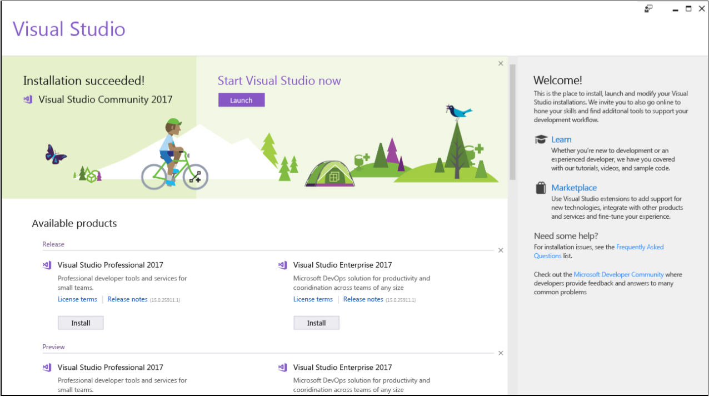
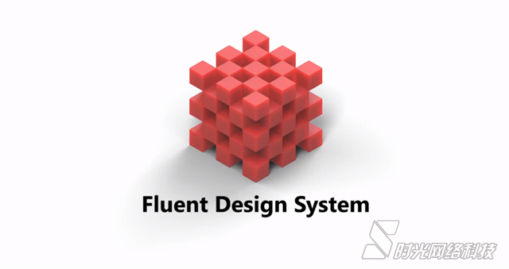
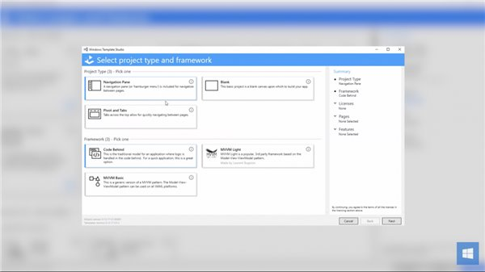
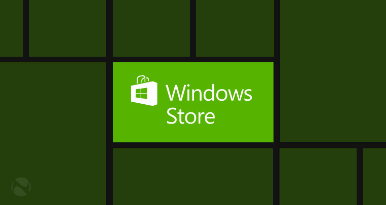

Let’s Encrypt 项目是由互联网安全研究小组ISRG，Internet Security Research Group主导并开发的一个新型数字证书认证机构CA，Certificate Authority。该项目旨在开发一个自由且开放的自动化 CA 套件，并向公众提供相关的证书免费签发服务以降低安全通讯的财…

Visual Studio 2017 15.4 版本已正式发布，同时发布的还有 Visual Studio for Mac 7.2 。Visual Studio 2017 version 15.4 发行说明 Visual Studio for Mac 7.2 发行说明 下载 Visual Studio 2017 version 15.4 下载 Visual Studio for Mac 7.2 Visual St…

在10月17日推送的Win10创意者更新秋季版中，微软将加入一部分的Fluent Design system（流畅设计体系）效果，微软今天发布了新的视频演示了Windows10系统中更多应用采用Fluent流畅设计的特效，包括Fluent Design的触摸。 在视频中微软演示了Win10系统中内置的…
作为Win10当中的默认地图，必应地图可能是广大用户在Win10上的首选，同时，必应地图也为那些希望减少对谷歌地图的依赖的开发者提供了一个可行的替代方案，如今，微软的必应地图已经拥有百万兆字节的图像和55个国家的实时交通信息。 在过去的一个月，微软必应…

除了.NET Core 2.0之外，微软今天还发布了Visual Studio 2017 v15.3和Visual Studio for Mac v7.1版本。Visual Studio 2017 v15.3提升了辅助功能，特别是使用Visual Studio最受欢迎的屏幕阅读器。Visual Studio for Mac v7.1新增支持.NET Core 2.0，包括控制…
今天是周二补丁日，微软面向Windows 10一周年更新用户、秋季创意者更新用户等推送了各类补丁包，微软还放出了秋季创意者更新16251预览版官方ISO镜像下载。除此之外，微软发布了SDK Preview 16257下载。 Windows 10 SDK Preview Build 16257下载，请点此链接。…

微软今天发布了Win10秋季创意者更新16232官方ISO镜像，还发布了Windows10SDK Build 16232。最近的Win10 SDK更新包括一部分现有APIs的升级，同时也删除了一部分APIs。整体上变化不大，因为微软将很快发布Win10秋季创意者更新正式版了。 微软提醒：此版本与以前…

微软刚刚发布了Windows Template Studio 1.2，这是一种新的UWP应用程序创建工具，借助这款工具，即使编程技术不高的人们，也不必消耗大量时间去打造一款成熟的应用。Windows Templates Studio将很快替代Windows App Studio。 ▲图片来源：OnMSFT新版本的Windo…

微软Azure云计算平台今天上架了Raspberry Pi（树莓派）在线模拟器，开发者利用该模拟器构建不同的项目，而无需一个实体树莓派设备就可以进行调试等。 目前微软Azure上的树莓派模拟器还处于早期阶段，实际上现在的树莓派模拟器可视化界面还只是静态的图像，但…

在5月份的Build 2017大会上，微软宣布了Windows商店的一些新特性。这些新功能包括Win32转制Win10 UWP应用上架等，比如Office 2016桌面版、Autodesk和SAP应用、苹果iTunes和Linux发行版上传到Win10应用商店。现在这项功能面向所有的Windows开发者开放。 开发者…